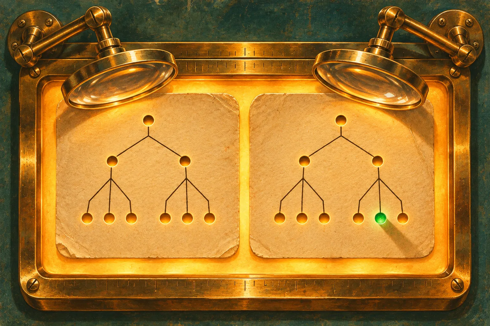

Primarch
Use CONSTITUTION.md for durable project-wide authority, priorities, or hard constraints. Mentat proposes the exact change. A human must approve it before creation or editing.
Your project encodes your decisions.
Let your project keep what it learns. While active, Mentat watches visible user messages for meaningful signals and carries intent into guidance agents can find and follow.
npx skills add Insighttful/mentat --skill mentat
Call mentat to review the visible session for changed preferences, recurring corrections, and explicit decisions. Mentat finds where those decisions belong in your AGENTS.md hierarchy and flags changes that belong in CONSTITUTION.md.
Start with the project’s existing rules and intent. Use your input, decisions you’ve confirmed, and recurring corrections as evidence for changes to how the project works.

Check whether existing guidance already covers your correction and whether the agent followed it. When you’ve authorized guidance edits, Mentat can record explicit standing decisions during the review. It proposes inferred rules for you to confirm.
Place operating conventions in the nearest applicable AGENTS.md. Use the root guide for project-wide operating rules. If a decision changes project-wide authority, a durable priority, or a hard constraint, Mentat asks you to approve the exact CONSTITUTION.md edit.
“It should work this way, but why should I have to tell you that?”
Your team usually adds an external dependency for migrations. In this project, you’ve made it clear that the built-in feature should come first when it meets the requirement. Mentat picks up the change from your conversation and records it in the migration guide when authorized.
Routine decisions go in the guide that owns them. Constitutional changes come back to you for approval. The next agent can pick up your decision where it applies, so you can say it once.
Project ontology links each rule to its governing guide. The manual covers recursive review, scoped hierarchy, and human-in-the-loop (HITL) approval.
Use CONSTITUTION.md for durable project-wide authority, priorities, or hard constraints. Mentat proposes the exact change. A human must approve it before creation or editing.
Read root CONSTITUTION.md if it exists. Follow applicable AGENTS.md guides from the work path up to the root. Each guide links to its parent and direct child guides.
Mentat works with agents that support the industry-standard Agent Skills specification.